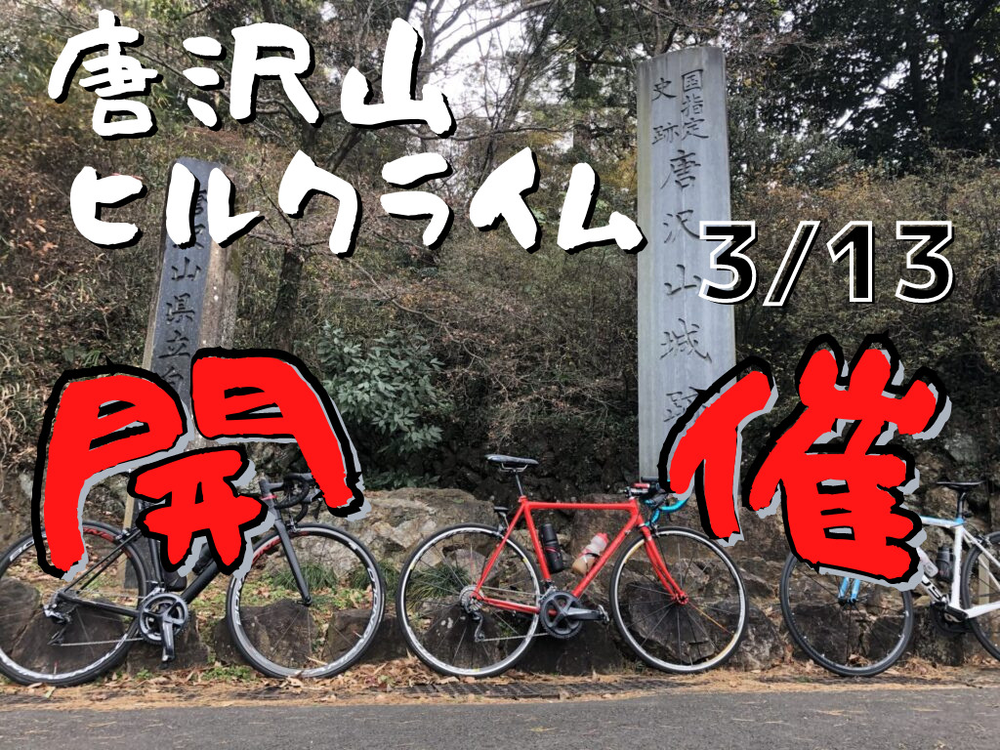

実験体A
AIと喧嘩するサイクリスト
AIと喧嘩しながら富士ヒルゴールドを狙うブログ
ChatGPTに相談し、反論し、たまに採用しながら、富士ヒルゴールドを目指す自転車実験ブログです。 練習、食事、機材、体重、AI活用、旧ブログ発掘をユーザー目線で記録します。
RECENT POSTS
最新記事
日誌、検証、旧ブログリメイクを新しい順に並べます。

旧ブログを掘り返したら、219本の記事と2178枚の画像が出てきた
昔の自分の部屋を片付けるつもりが、ロードバイクの化石発掘現場になりました。
旧ブログ発掘 / AI相談
昔の富士ヒル追い込み論を、今の方針で読み直す
追い込みすぎない方針の根っこにある話。AIにもツッコませながら、昔の富士ヒル観を今の練習方針へつなぎ直します。
旧ブログ発掘 / 富士ヒル
脚が重いので、ご飯300g実験を開始した
糖質と回復の関係を見る、日誌のサンプル。AI相談を日記の横に置いていきます。
日誌 / 食事 / AI相談
Tarmac SL6を今読み直す。Aethos2で富士ヒルへ行く前に
2019年の実績と、今のAethos2をつなぐ機材リメイク。昔の機材感覚を今の目線で整理します。
旧ブログ発掘 / 機材
CURRENT STATUS
現在地
初めて来た人が、今の状態をざっくり理解できるためのメモです。目標やメニューの細かい話は別ページに分けます。
EXPERIMENTS
実験カテゴリ
読者が興味のあるテーマから入れるように、まずは6カテゴリで始めます。
OLD LOGS
昔の記事を、今の脚とAIで読み直す
旧ブログ「ロードバイク時々マウンテン」からWayback Machineで記事を発掘しました。 メインではなく、必要な時に今の挑戦へ接続する素材庫として使います。